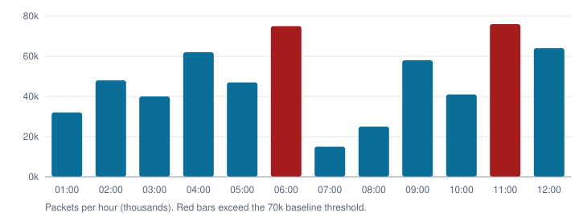

Dashboard Overview
Plant A SCADA network. Updated .
Network status summary
- Active alerts 12
- Devices monitored 48
- Network status Normal
- Last scan 2 min ago
Traffic Volume: Last 12 Hours

Recent Alerts
View all alerts →| Alert ID | Device | Pattern | Detected | Confidence | Status |
|---|---|---|---|---|---|
| #1042 | PLC-07 | Scanning / reconnaissance | 89% | New | |
| #1041 | HMI-03 | Traffic profiling | 61% | Investigating | |
| #1040 | RTU-05 | Address correlation attempt | 72% | Investigating | |
| #1039 | PLC-12 | Scanning / reconnaissance | 91% | New | |
| #1037 | RTU-02 | Volume spike | 45% | False Positive |